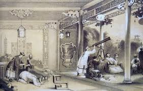
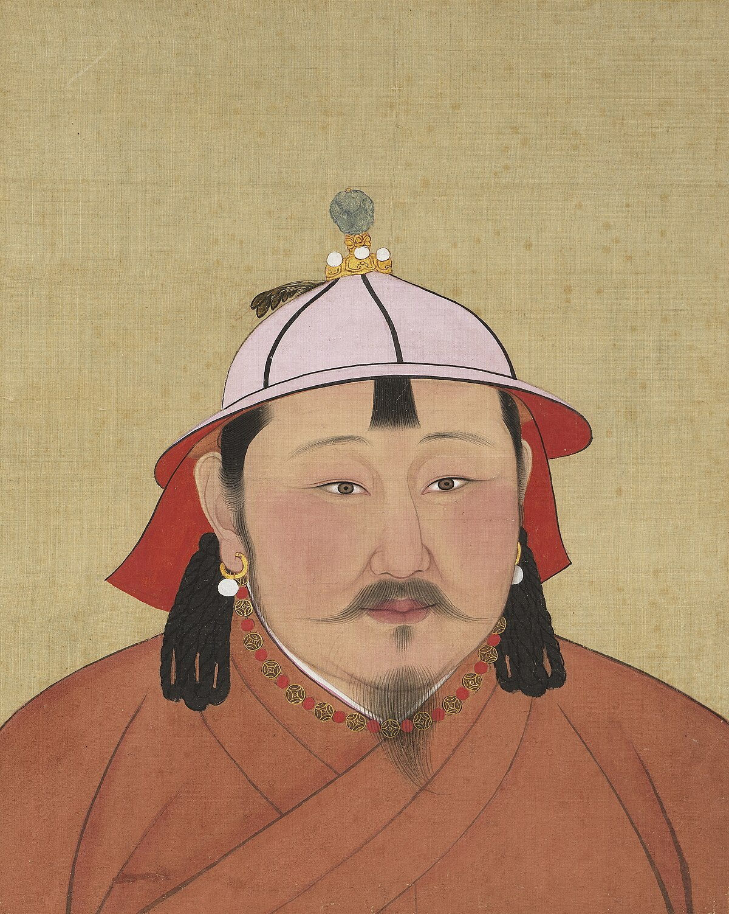

May
Named after Maia, the Greek goddess of fertility, growth, and the spring. In Roman mythology, Maia was associated with the earth and nurturing new life, making May a fitting name for a month when flowers bloom and nature thrives in many parts of the world.
May 1

Christopher Columbus presents his plans discovering a western route to the Indies to the Spanish Queen Isabella I of Castile.
1486 AD
Spain

The Penny Black, the first official adhesive postage stamp, is issued in the United Kingdom.
1840 AD
United Kingdom

The Empire State Building is dedicated in New York City.
1931 AD
New York, United States
May 2

King Richard I of England gives Portsmouth its first royal charter.
1194 AD
Portsmouth, England

The King James Version of the Bible is published for the first time in London, England, by printer Robert Barker.
1611 AD
London, England

Osama bin Laden, the suspected mastermind behind the September 11 attacks and the FBI's most wanted man, is killed by the United States Navy SEALs in Abbottabad, Pakistan.
2011 AD
Waziristan Haveli, Bilal Town, Abbottabad, Khyber Pakhtunkhwa, Pakistan
May 3

Mayan king Bird Jaguar IV of Yaxchilan in modern-day Chiapas, Mexico, assumes the throne.
752 AD
Yaxchilan in modern-day Chiapas, Mexico

The Canterbury and Whitstable Railway is opened; it is the first steam-hauled passenger railway to issue season tickets and include a tunnel.
1830 AD
Kent, England

The first unsolicited bulk commercial email (which would later become known as "spam") is sent by a Digital Equipment Corporation marketing representative to every ARPANET address on the west coast of the United States.
1978 AD
United States
May 4

The Augustinian monastic order is constituted at the Lecceto Monastery when Pope Alexander IV issues a papal bull Licet ecclesiae catholicae.
1256 AD
Lecceto, Tuscany, Italy

Dutch explorer Peter Minuit arrives in New Netherland (present day Manhattan Island) aboard the 'See Meeuw'.
1626 AD
New Netherland present day Manhattan Island, United States

The 108-story Sears Tower in Chicago is topped out at 1,451 feet (442 m) as the world's tallest building.
1973 AD
233 S. Wacker Drive, Chicago, Illinois 60606, United States
May 5

On his second voyage to the New World, Christopher Columbus sights Jamaica, landing at Discovery Bay and declares Jamaica the property of the Spanish crown.
1494 AD
Jamaica

Mary Kies becomes the first woman awarded a U.S. patent, for a technique of weaving straw with silk and thread.
1809 AD
United States

Project Mercury: Alan Shepard becomes the first American to travel into outer space, on a sub-orbital flight.
1961 AD
United States
May 6

King Henry VIII orders English-language Bibles be placed in every church. In 1539 the Great Bible would be provided for this purpose.
1541 AD
England

The Eiffel Tower is officially opened to the public at the Universal Exposition in Paris.
1889 AD
7th arrondissement, Paris, France

Steve Jobs of Apple Inc. unveils the first iMac.
1998 AD
United States
May 7

In Constantinople, the dome of the Hagia Sophia collapses, twenty years after its construction. Justinian I immediately orders that the dome be rebuilt.
558 AD
Fatih, Istanbul, Turkey

The world's oldest surviving clipper ship, the City of Adelaide is launched by William Pile, Hay and Co. in Sunderland, England, for transporting passengers and goods between Britain and Australia.
1864 AD
Sunderland, England

The concept of the integrated circuit, the basis for all modern computers, is first published by Geoffrey Dummer.
1952 AD
Washington, D.C., United States
May 8

Spring and Autumn period: The house of Zhao defeats the house of Zhi, ending the Battle of Jinyang, a military conflict between the elite families of the State of Jin.
453 BC
China

Emperor Honorius signs an edict providing tax relief for the Italian provinces Tuscia, Campania, Picenum, Samnium, Apulia, Lucania and Calabria, which were plundered by the Visigoths.
413 AD
Italy
.jpg )
Reccared I opens the Third Council of Toledo, marking the entry of Visigothic Spain into the Catholic Church.
589 AD
Spain

Treaty of Brétigny drafted between King Edward III of England and King John II of France (the Good).
1360 AD
France
.jpg )
Julian of Norwich, a Christian mystic and anchoress, experiences the deathbed visions described in her Revelations of Divine Love.
1373 AD
England

Joan of Arc lifts the Siege of Orléans, turning the tide of the Hundred Years' War.
1429 AD
France

Kentishmen revolt against King Henry VI.
1450 AD
England

A group of imperial guards, led by Trịnh Duy Sản, murdered Emperor Lê Tương Dực and fled, leaving the capital Thăng Long undefended.
1516 AD
Vietnam

Hernando de Soto stops near present-day Walls, Mississippi, and sees the Mississippi River (then known by the Spanish as Río de Espíritu Santo, the name given to it by Alonso Álvarez de Pineda in 1519).
1541 AD
United States
May 9

Athanasius is elected Patriarch of Alexandria.
328 AD
Egypt

Lombard Revolt: Lombard forces led by Melus revolt in Bari against the Byzantine Catepanate of Italy.
1009 AD
Italy

England and Portugal formally ratify their alliance with the signing of the Treaty of Windsor, making it the oldest diplomatic alliance in the world which is still in force.
1386 AD
England

Timurid monarch 'Abd al-Latif is assassinated.
1450 AD
Timurid Empire

Hernando de Alarcón sets sail on an expedition to the Gulf of California.
1540 AD
Mexico
May 10
- 
A sunspot is observed by Han dynasty astronomers during the reign of Emperor Cheng of Han, one of the earliest dated sunspot observations in China.
28 BC
China
Scottish nobles recognize the authority of Edward I of England pending the selection of a king.
1291 AD
Scotland
- 
Temür, Khagan of the Mongols, is enthroned as Emperor of the Yuan dynasty.
1294 AD
Mongolia

Amerigo Vespucci allegedly leaves Cádiz for his first voyage to the New World.
1497 AD
Spain

Christopher Columbus visits the Cayman Islands and names them Las Tortugas after the numerous turtles there.
1503 AD
Cayman Islands

Jacques Cartier visits Newfoundland.
1534 AD
Canada
May 11

Constantine the Great dedicates the much-expanded and rebuilt city of Byzantium, changing its name to New Rome and declaring it the new capital of the Eastern Roman Empire.
330 AD
Turkey

A copy of the Diamond Sūtra is published, making it the earliest dated and printed book known.
868 AD
China

In the first coronation ceremony ever held for an English monarch, Edgar the Peaceful is crowned King of England, having ruled since 959 AD. His wife, Ælfthryth, is crowned queen, the first recorded coronation for a Queen of England.
973 AD
England

Matilda of Flanders, wife of William the Conqueror, is crowned Queen of England.
1068 AD
England

Louis IX of France and James I of Aragon sign the Treaty of Corbeil, renouncing claims of feudal overlordship in one another's territories and separating the House of Barcelona from the politics of France.
1258 AD
France
May 12

Pope Stephen I succeeds Pope Lucius I, becoming the 23rd pope of the Catholic Church, and immediately takes a stand against Novatianism.
254 AD
Rome

Zhu Wen forces Emperor Ai into abdicating, ending the Tang dynasty after nearly three hundred years of rule.
907 AD
China

Richard I of England marries Berengaria of Navarre in Cyprus; she is crowned Queen consort of England the same day.
1191 AD
England

Antipope Nicholas V, a claimant to the papacy, is consecrated in Rome by the Bishop of Venice.
1328 AD
Rome

Jagiellonian University, the oldest university in Poland, is founded in Kraków.
1364 AD
Poland

Pope Alexander VI excommunicates Girolamo Savonarola.
1497 AD
Rome

The Prince of Anhua rebellion begins when Zhu Zhifan kills all the officials invited to a banquet and declares his intent on ousting the powerful Ming dynasty eunuch Liu Jin during the reign of the Zhengde Emperor.
1510 AD
China

National University of San Marcos, the oldest university in the Americas, is founded in Lima, Peru.
1551 AD
Peru

French Wars of Religion: Henry III of France flees Paris after Henry I, Duke of Guise, enters the city and a spontaneous uprising occurs.
1588 AD
France

London playwright Thomas Kyd is arrested and tortured by the Privy Council for libel.
1593 AD
England